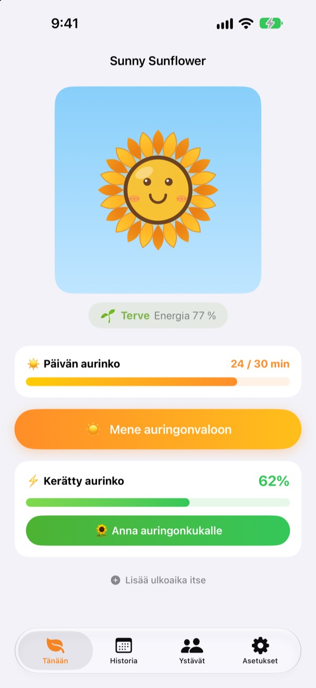
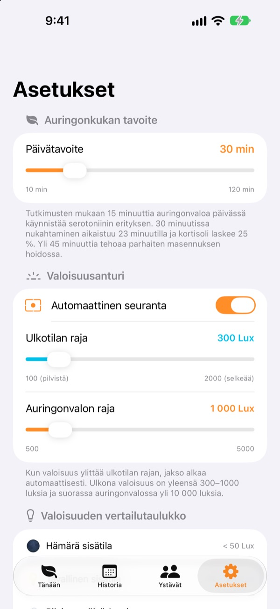
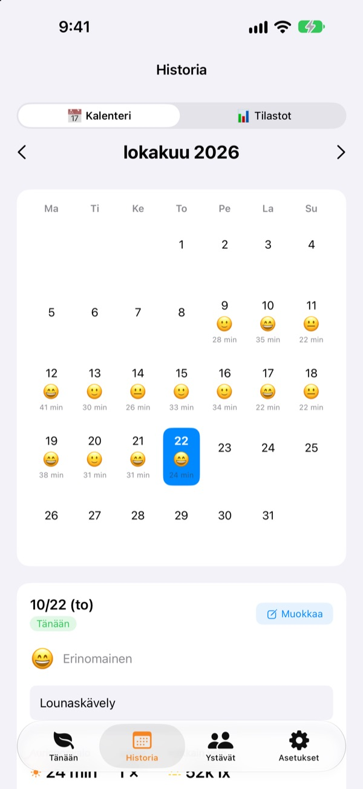
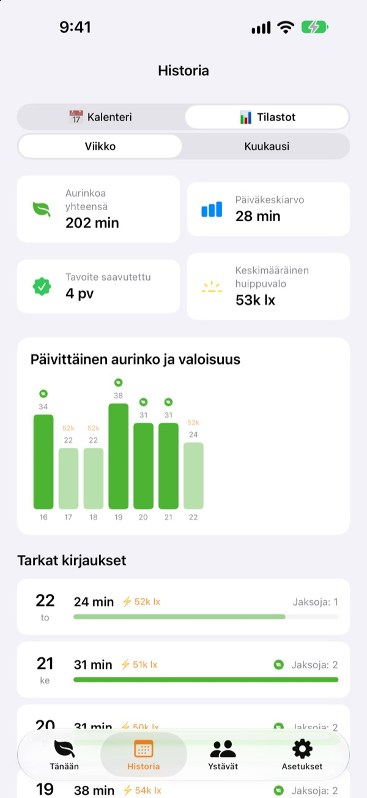

Tämän päivän aurinko
kasvattaa auringonkukkasi
Kun menet ulos, aurinkoaika kertyy itsestään. Anna kerätty aurinko auringonkukalle, niin se pysyy hehkeänä. Jos unohdat sen muutamaksi päiväksi, se alkaa kuihtua.
Kaikki ominaisuudet ovat ilmaisia. Tiedot pysyvät laitteellasi.

Kerää vähän aurinkoa
Valitse valon määrä ja kesto, ota aurinkoa ja anna se auringonkukalle, joka alkaa jo nuokkua.
Montako minuuttia aurinkoa sait tänään?
Muutama askel töihin, pikainen lounaskäynti. Kun vietät päivän sisällä, huomaat vasta illalla, ettet juuri nähnyt päivänvaloa. Sunny Sunflower näyttää ulkona vietetyn ajan lukuina, ja auringonkukka odottaa jo huomista kävelyä.
Mene ulos, se mittaa itse
Napauta Mene auringonvaloon ja lähde ulos. Sovellus arvioi ympäristön valoisuuden etukameran valotustiedoista. Kun valo pysyy ulkotason kirkkaana noin 30 sekuntia, kirjaus alkaa. Kuvia ei koskaan oteta eikä tallenneta.
Sen jälkeen anturi käynnistyy vain 20 sekunniksi kahden minuutin välein akkua säästääkseen.

Aurinko ja mieliala päivä päivältä
Kalenterissa jokaisella päivällä on oma aurinkoaikansa, mieliala-emoji ja lyhyt muistiinpano. Olitko ulkona mittaamatta? Lisää ulkoaika itse lisää 5–120 minuuttia.

Viikko ja kuukausi yhdellä silmäyksellä
Viikko- ja kuukausitilastot näyttävät, minä päivinä saavutit tavoitteen ja paljonko aurinkoa saat keskimäärin. Aseta päivätavoite 10–120 minuuttiin ja näe heti etusivulta, paljonko tänään vielä puuttuu.
Koti- ja lukitusnäytön widgetit sekä Dynamic Island näyttävät päivän auringon ja auringonkukan voinnin.

Aloita kolmella askeleella
- 1
Aseta päivätavoite
Oletus on 30 minuuttia. Asetuksista voit valita 10–120.
- 2
Mene aurinkoon
Napauta
Mene auringonvaloonja mene ulos sovellus auki. Kameran käyttöoikeutta kysytään vain kerran. - 3
Ruoki auringonkukka
Napauta
Anna auringonkukalle, niin kerätty aurinko muuttuu energiaksi.
Näin valo muuttuu auringoksi
- Alle 300 luksia
- Heikko valo: ei laske aurinkoajaksi
- 300–1 000 luksia
- Ulkona/pilvistä: 1–3 % 10 minuutissa
- 1 000–10 000 luksia
- Aurinkoa: 3–33 % 10 minuutissa
- Yli 10 000 luksia
- Kirkas aurinko: yli 33 % 10 minuutissa
- Kerätty aurinko
- minuutit × keskimääräinen valoisuus ÷ 3 000 (enintään 100 % kerrallaan)
- Auringonkukan energia
- laskee 2,5 % tunnissa, noin 60 % vuorokaudessa
Ulkotilan rajan voi asettaa 100–2 000 luksiin asetuksista. Oletus on 300 luksia.
Usein kysyttyä
Miten aurinkoa mitataan?
Sovellus arvioi ympäristön valoisuuden (valaistusvoimakkuuden) etukameran valotustiedoista. Kun valo pysyy hetken ulkotason kirkkaana, kirjaus alkaa itsestään. Kuvia ei oteta eikä tallenneta.
Kuluttaako mittaus paljon akkua?
Kun aurinko on varmistettu, anturi ei ole jatkuvasti päällä. Se herää noin 20 sekunniksi kahden minuutin välein mittaamaan uudelleen, ja muun ajan hoitaa tavallinen ajastin.
Auringonkukkani kuihtuu jatkuvasti.
Auringonkukka menettää 2,5 % energiastaan tunnissa. Kerää aurinkoa ja napauta Anna auringonkukalle. Selkeänä päivänä 15–20 minuuttia suorassa auringossa riittää kattamaan koko päivän.
Olin ulkona, mutta mitään ei kirjattu.
Lisää 5–120 minuuttia etusivun alalaidan kohdasta Lisää ulkoaika itse. Jos kirjaus ei pilvisinä päivinä tahdo käynnistyä, laske ulkotilan rajaa asetuksista.
Miten ystävätoiminto toimii?
Kun sinä ja ystäväsi olette lähellä toisianne (noin 10 metrin sisällä) ja mittaatte molemmat aurinkoa, yhteys syntyy itsestään. Uuden ihmisen kanssa yhteinen auringonotto pitää ensin vahvistaa, sen jälkeen kaikki käy automaattisesti. Terälehdet värittyvät ja palaavat omaan väriinsä 3 päivän kuluessa, ja yhteinen aikanne tallentuu Ystävät-välilehdelle. Molemmat tarvitsevat sovelluksen sekä Bluetoothin ja paikallisverkon käyttöoikeuden.
Onko tämä oikeasti ilmainen?
On. Ei mainoksia eikä ostoja, kaikki ominaisuudet mukana. Jos pidät sovelluksesta, voit jättää tipin, mutta se ei avaa mitään lisää.
Voinko varmuuskopioida tai siirtää tietoni?
Kaikki pysyy laitteella ilman palvelinta, ja viimeiset 90 päivää säilytetään. Erillistä vientiä ei ole, mutta tiedot sisältyvät tavalliseen iPhonen varmuuskopioon iCloudissa tai tietokoneella.
Miten poistan kaikki tiedot?
Napauta sovelluksen asetuksissa Nollaa tiedot tai poista sovellus. Toimintoa ei voi perua.
Mihin ilmoitan virheestä?
Kirjoita alla olevaan osoitteeseen tai avaa issue GitHubissa (github.com/M1zz/SunlightTracker/issues). Laitteen malli, iOS-versio ja kuvaus tapahtuneesta auttavat paljon. Vastaamme yleensä muutamassa päivässä.
Kysyttävää tai palautetta? Kirjoita osoitteeseen leeo@kakao.com.